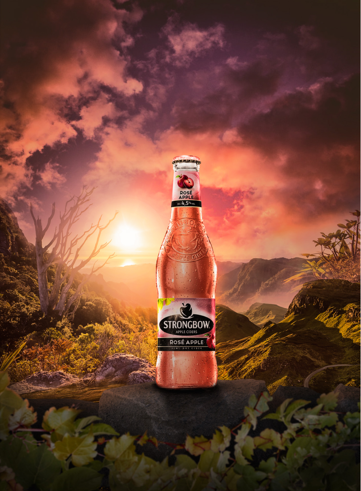

Strongbowl Rose Apple
Elevating the Strangbowl Apple Beer to an extraordinary level, I've seamlessly blended the essence of a mesmerizing sunset backdrop.
Nestled atop a rugged rock, the bottle stands tall, symbolizing the pinnacle of taste. As the sun's final rays cast a warm glow, a radiant light shines behind the bottle, transforming it into a beacon of unparalleled allure.
This Photoshop masterpiece not only captures the essence of the beverage but also crafts a visual narrative, setting it apart in a league of its own.